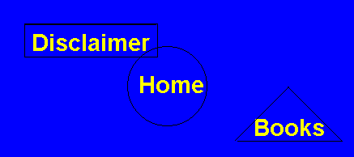

Any image that is subdivided into regions that point to different pages is called a Image Map. There are two ways that you can put an image map on your page: by using Client Side image maps or Server Side image maps. Client side scripting is when the coordinates for the image map is stored on an HTML page. Server side image maps store the coordinates for the image map on the page's web server. Because Client Side image map's are quicker loading and easier to understand, we will only explain how to implement Client Side image maps.
When we want to create an image map we use the <MAP> tag. The <MAP> tag, when put in the body part of our page, is our way of telling the browser "I'm going to put an image map on this page". The <MAP> tag takes one attribute: the NAME attribute. The NAME attribute gives our image map a name that we can call it with. It's just like calling a dog, you do'nt call it "dog" it's whole life, you name it something like "spot" and call it by name! Our basic <MAP> tag looks like this:
<MAP NAME="newmap">
Now let's say that I have an image that I want to use on my site as an image map, maybe one that looks something like this:

How do I make it into an imagemap? Well, there's really no physical way to change it into an image map. All that you can do is divide it into areas that link to different pages. We do this by using the <AREA> tag. The <AREA> tag takes three arguments: SHAPE, COORDS, and HREF. SHAPE is easy: it tells the browser what shape the said area is. SHAPE can be given three arguments, "rect" for rectangle areas, "circle" for areas that are circles, and "poly" for polygons that are not rectangles. So far, our <AREA> tag looks like this:
<AREA SHAPE="circle, rect or poly">
So how do we define the actual coordinates of our shape? As you've probably guessed, we use the COORDS attribute. For a rectangle, we have to pass the COORDS attibute the top left and bottom right corners of our linking area.
How do we find these coordinates? Most image editing programs, such as Paint Shop Pro (free to try, my personal favorite!) show you what coordinates you're pointing at on the image. The first coordinate is the "x" or horizontal coordinate, and the second is the "y" or vertical coordinate (just like in algebra class!). I have already opened up my image in Paint Shop Pro and collected that the top left coordinates in the rectangle area of my image (the one surrounding "Disclaimer") are 30 (the "x" coordinate), and 30 (the "y" coordinate). I also got the bottom right coordinates, 194, 69. Now that we've done the hard part (getting the coordinates) all we have to do is pass them to the COORDS attribute. In our area tag, it looks like this:
<AREA SHAPE="rect" COORDS="30,30 , 194,69">
Whew! That's the most work we've done in this whole tutorial! But we're not done yet, we still need to pass where we want this section of our image to point to.
If we want our rectangle area to point somewhere, we're going to have to use one more attribute: HREF. The HREF attribute simply takes the Hypertext Reference (also called a link) that you want to use in this area as an argument. So our complete <AREA> tag looks like this:
<AREA SHAPE="rect" COORDS="30,30 , 194,69" HREF="../disclaimer.html">
(Note: Because our Disclaimer page is in the directory above the current one, if we use relative linking we need to add a '../' before our page name.)
So far we've flagged off the rectangular portion surrounding "Disclaimer" in our image to point to the page "disclaimer.html". But what about that circular portion around "Home"? This one's a simple switch, but let's take it one attribute at a time to make sure we get it.
The SHAPE attribute's argument has to change from "rect" to "circle", since we're no longer flagging off a rectangular area and now using a circular area. To get our coordinates, we're going to have to fire up the old graphics editing program. This time there are no corners to find, so we need to get the coordinates of the center of the circle and its radius (in pixels). For those of you who did'nt take geometry in high school (shame on you!) the radius of a circle is the distance from the center of the circle to any point on the edge of the circle. Paint Shop Pro tells me that the center of my circle's coordinate's are 204, 106. It also tells me that the circle's radius is 57. Knowing this, we can change our <AREA> tag to look like this:
<AREA SHAPE="circle" COORDS="204,106 , 57" HREF="../index.html">
(Note: The "index.html" page, like the "disclaimer.html" page, is in the directory above the current one.)
You may notice that the circle and rectangle overlap a little bit. When there are overlapping area's in an image map, the area that is defined in the source HTML first is considered "on top". So if you click on the overlapping area and our rectangle was the first <AREA> tag in the source HTML, you would be taken to the Disclaimer page.
Wait just one minute! The last area in our image is a triangle? But the SHAPE attribute does'nt take "triangle" as an argument! How do we get around this? With the use of the "poly" argument of course!
The "poly" (or polygon) argument to the SHAPE attribute is used to define areas that are not rectangles or circles. In fact, you can define up to a 100 cornered polygon with the "poly" argument! The poly argument simply takes the coordinates of all the corners in the polygon, and connects them, dot to dot style. Since our lovely triangle has three corners, it has three coordinate pairs: 355,108 (top), 291,174 (bottom left) and 421,174 (bottom right). If we put them into our complete <AREA> tag, it looks like this:
<AREA SHAPE="poly" COORDS="355,108 , 291,174 , 421,174" HREF="../books.html">
Note that the browser automatically connects the last coordinate pair to the first coordinate pair to complete our polygon.
Now we have a complete image map, but what if we want the parts of our image that do'nt point anywhere yet to lead somewhere? That's where the "default" argument to the SHAPE attribute comes in. We could make "default" point somewhere, like this:
<AREA SHAPE="default" HREF="../magazines.html">
This would make the area not in the circle, rectangle or triangle point to "magazines.html" in the directory above the current one. But since I do'nt want this part of the image to point anywhere right now, I use the NOHREF attribute, which simply says "no link in this area!".
Our completed image map code looks like this:
<MAP NAME="newmap">
<AREA SHAPE="rect" COORDS="30,30 , 194,69" HREF="../disclaimer.html">
<AREA SHAPE="circle" COORDS="204,106 , 57" HREF="../main.php3">
<AREA SHAPE="poly" COORDS="355,108 , 291,174 , 421,174" HREF="../books.html">
<AREA SHAPE="default" NOHREF>
</MAP>
To put our image map on the page we use an <IMG> tag with the USEMAP attribute. The USEMAP attribute tells the browser "use this image map". In this example, we're going to pass USEMAP the map that we made and named "newmap", like this:
<IMG SRC="imagemap1.gif" USEMAP="#newmap">
Where imagemap1.gif is the name of my image. Take a look at how we had to put a "#" in front of the name of our map. This is because when you name a map, you flag it off so we can call it later. The "#" tell's the browser that we're going to be using a certain part of an html page. Knowing this, we can use image maps from other pages like this:
<IMG SRC="imagemap1.gif" USEMAP="lesson9.html#newmap">
Where lesson9.html (this page) is the page that newmap is on.
Well that was'nt too hard! We've got our image map all divvied up, and it looks like this:
Not bad huh? I'll show you even cooler tricks in the next lesson!